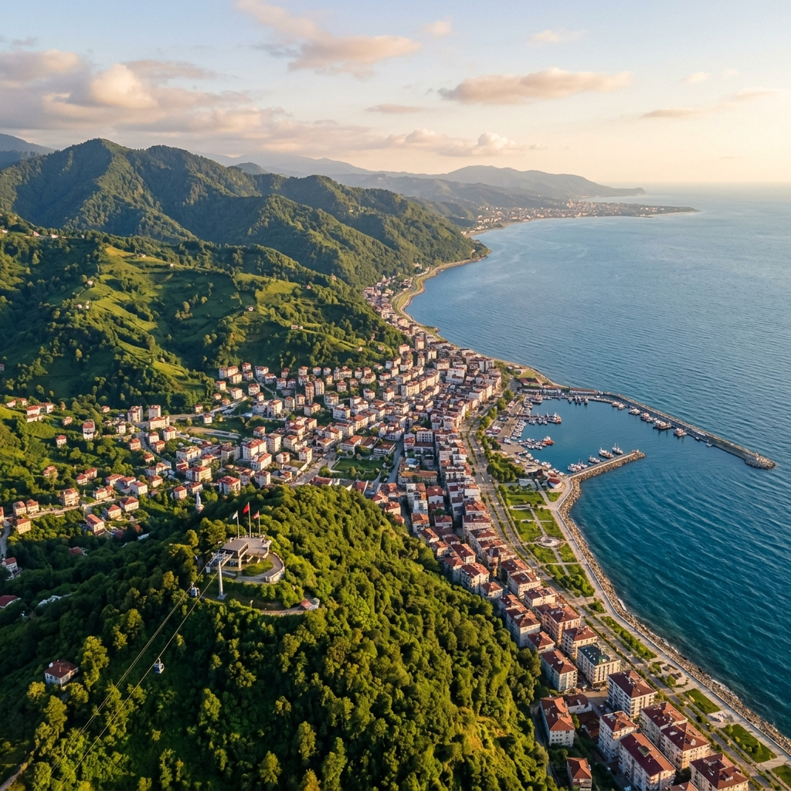

Karadeniz'in En Taze Lezzetleri
Roka Balık olarak, kaliteyi ve tazeliği her zaman ilk sıraya koyuyoruz. Karadeniz'in bereketli sularından günlük olarak yakalanan mevsim balıklarını, geleneksel pişirme yöntemleri ve modern dokunuşlarla hazırlıyoruz. Denizden masanıza uzanan bu yolculukta, doğallıktan asla ödün vermiyoruz.
Şeflerimizin tutkuyla hazırladığı özel mezelerimizden, ızgara çeşitlerimize kadar her detayda kusursuzluğu arıyoruz. Ordu'nun en seçkin balık restoranı olarak, misafirlerimize sadece bir akşam yemeği değil; tazelikle, nezaketle ve Karadeniz misafirperverliğiyle harmanlanmış unutulmaz bir deneyim vaat ediyoruz.